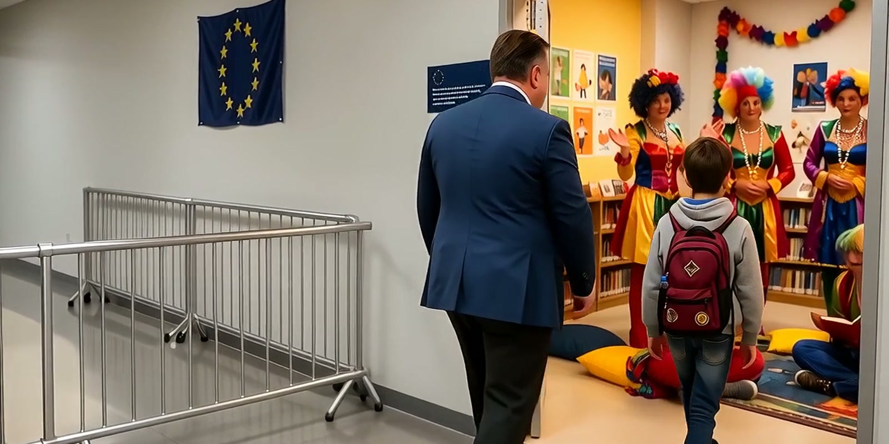
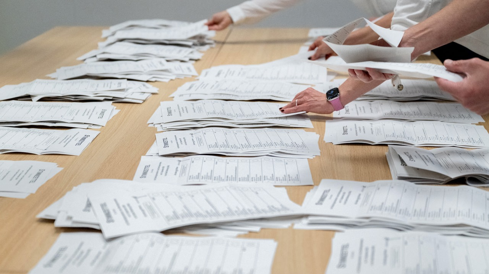

Top-Themen / EU
EU kümmert sich rührend um unsere Kinder
Soziale Medien sollen für Kinder begrenzt werden. Bis dahin übernehmen öffentlich-rechtliches Fernsehen, kommunale Bibliotheken und EU-geförderte Diversity-Programme die Orientierung.
Deutschland
Regierung deckelt Spritpreis bei sieben Euro

Deutschland
Falsch wählen gerade noch vereitelt

Deutschland
AfD tarnt Wahlwerbung als „FCKAFD“-Protest
Mehr RealFunk
Lesen, ausprobieren, ansehen.
 KI-SATIRE
KI-SATIRESatire · Interaktiv
Das Politikerlexikon
Politische Sprüche. Direkt in Klartext übersetzt.
Übersetzer ausprobieren →Bild des Tages
Der neue 5-Euro-Schein – Entwurf durchgesickert
Ziel der neuen Euro-Noten ist es, die Errungenschaften der EU für ihre Bürger entsprechend zu würdigen.
Bild ansehen →
Satire · Interaktiv
Der Ben-Stempelautomat
Knopf drücken. Ben stempeln. Originalwortlaut prüfen.
Ausprobieren →
Satire · KI-Video
Satirevideo der Woche
Der „anonyme Insider“ aus dem Kanzleramt. Natürlich verfremdet.
Ansehen →